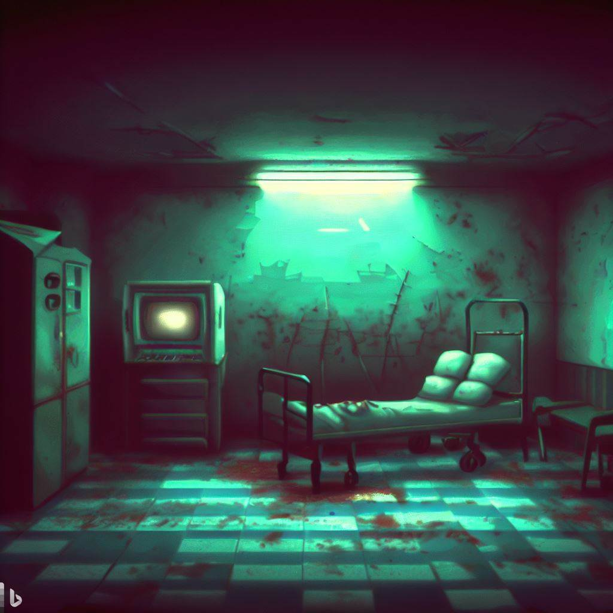
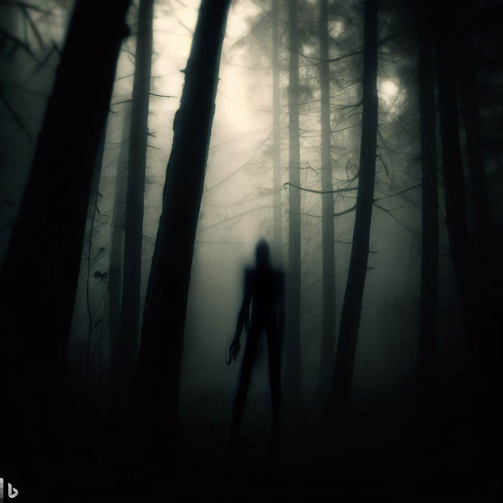

Dark Asylum
Sinopsis: Conviertete en un periodista que investiga una serie de
misteriosas desapariciones en un hospital psiquiátrico. Tras
infiltrarte en el hospital te daras cuenta de que está poseído por
una entidad maligna que controla a los doctores y enfermeras.
Encuentra una forma de desvelar el misterio para así poder liberar
al hospital y a tí mismo de la maldición.
Plataformas: -

Anna
Sinopsis: Anna se ambienta en un aserradero abandonado que descansa
en lo alto de las montañas de Italia. Este juego te desafía a
descubrir pistas espeluznantes y a utilizarlas para resolver puzles
relacionados con el oscuro pasado de tu personaje. Tu comportamiento
no solo incide en la salud mental del personaje principal, sino que
además puede cambiar las ubicaciones y desvelar nuevos secretos que
te conducirán hasta uno de los ocho posibles finales.
Plataformas: -
Cry of Fear
Sinopsis: controlaras a Simon Henriksson, un joven de 19 años que se
despierta en un callejón desconocido poco después de ser atropellado
por un automóvil. Deberas navegar por la ciudad resolviendo
acertijos y luchando contra monstruos para progresar.
Plataformas: -

Mundaun
Sinopsis: Mundaun describe historia de terror que se desarrolla en
un oscuro y recóndito bosque de los Alpes. Explora varias zonas
repletas de secretos por descubrir, sobrevive a encuentros hostiles,
conduce vehículos, llena tu inventario y resuelve una variedad de
rompecabezas hechos a mano.
Plataformas: -
After Death
Sinopsis: En un reino infestado de monstruos y otros engendros
terroríficos, salir es una situación extremadamente difícil.
Utilizando las almas de los muertos para guiarte, este desafiante
juego te mantendrá en vilo mientras te enfrentas a una plétora de
aberraciones profanas.
Plataformas: -
Visage
Sinopsis: El juego tiene lugar en una ciudad aislada en la década de
1980. La casa, centro activo del videojuego, fue construida hace
siglos, siendo de las viviendas más antiguas del lugar. Decenas de
familias han vivido en ella desde su construcción. Algunos de ellos
murieron brutalmente; otros, por lo contrario, vivieron de manera
afable sus años aquí.
Plataformas: -